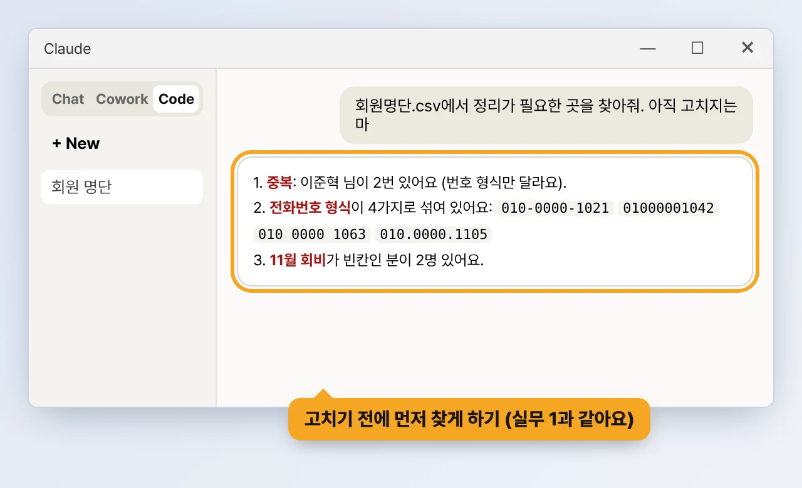
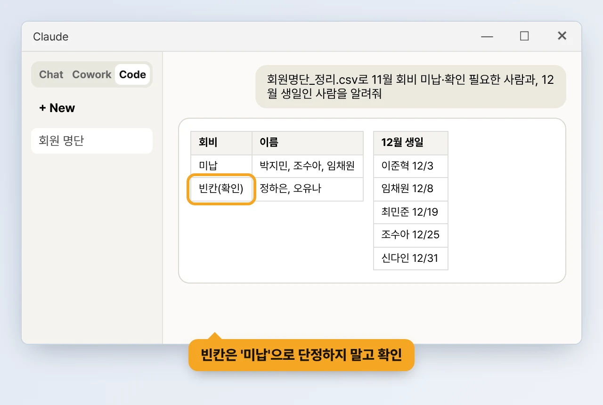
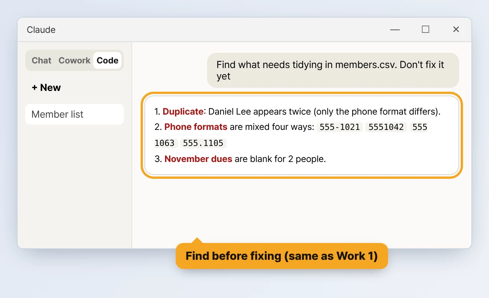
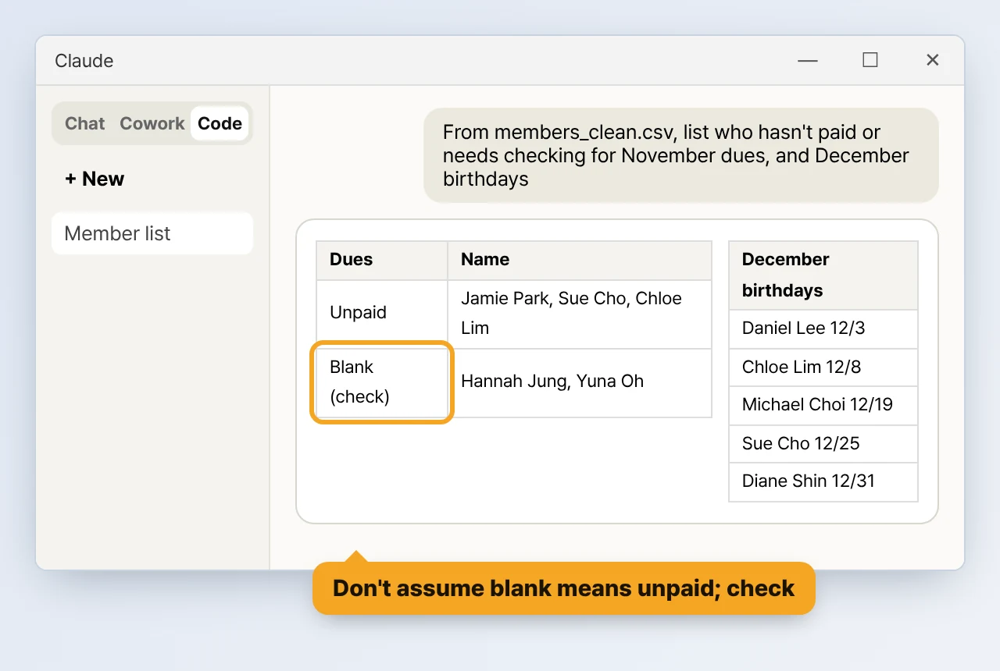

👆 이 내용은 버튼 따라 하는 실습으로도 있어요. 처음이라면 실습으로 직접 해 보고, 이 글은 복습할 때 보세요. 실습 시작하기 →
※ 글 속 그림은 따라 하기 쉽도록 그린 예시입니다. 실제 앱 화면과 모양·글자가 조금 다를 수 있어요. 예시 명단의 이름·연락처는 모두 가짜예요.
오늘 새로 배우는 것
동호회·모임 총무를 맡으면 명단 정리가 큰일이에요. 오늘은 얼른산악회 회원 명단을 Claude와 함께 정리해 봐요.
1. 예시 명단 준비하기
회원 15줄짜리 명단이에요(전화번호는 실제로 쓰이지 않는 010-0000-).
연습 폴더로 옮기고, + New로 새 대화를 여세요(Local · 연습 · Manual).
2. 정리할 곳 먼저 찾게 하기
회원명단.csv에서 정리가 필요한 곳을 찾아줘. 아직 고치지는 마
숨겨 둔 것은 세 가지: 이준혁 님 중복, 전화번호 형식 4가지, 11월 회비 빈칸 2명. 15줄인데 실제 회원은 14명이에요.
3. 원본은 두고 정리본 만들기
원본은 그대로 두고 회원명단_정리.csv를 새로 만들어줘. 중복은 한 줄만 남기고, 전화번호는 010-0000-0000 형식으로 통일하고, 회비 빈칸은 '확인 필요'라고 적어줘. 엑셀에서 한글이 깨지지 않게 저장해줘정리 규칙을 분명하게 말해야 마음대로 바꾸지 않아요. 특히 빈칸을 '미납'으로 단정하지 않게 하세요.
4. 필요한 명단 뽑기
회원명단_정리.csv로 11월 회비 미납·확인 필요한 사람과, 12월 생일인 사람을 알려줘
| 명단 | 정답 |
|---|---|
| 회비 미납 | 박지민, 조수아, 임채원 |
| 확인 필요(빈칸) | 정하은, 오유나 |
| 12월 생일 | 이준혁(3일), 임채원(8일), 최민준(19일), 조수아(25일), 신다인(31일) |
5. 이름을 넣은 안내 문자 초안
회비 미납인 3명에게 보낼 정중한 안내 문자를 이름을 넣어 각각 써줘. 계좌번호는 [계좌] 자리로 비워 둬계좌번호처럼 Claude가 모르는 정보는 지어내지 않게 빈칸으로 두게 하세요. Claude Code는 문자를 보내지는 않아요. 초안을 확인하고 복사해서 직접 보내세요.
이런 것도 맡겨 보세요
- 새 회원 추가: "새 회원 김하늘, 010-0000-1315, 1992-05-05, 오늘 가입, 회비 O를 회원명단_정리.csv에 추가해줘"
- 생일 축하 문자, 산행 출석부 만들기
오늘 배운 것
- 개인정보: 실제 명단은 서버로 전송된다. 규칙 확인, 필요하면 가리기.
- 규칙을 분명하게 말하면 마음대로 바꾸지 않는다.
- 모르는 건 빈칸으로. 보내기 전에 이름·금액을 확인한다.
※ The pictures in this guide are illustrations to make it easy to follow. The real app may look a little different or use different words. Everyone in the sample list is fictional.
What you'll learn today
If you look after a club's admin, keeping the member list tidy is a big job. Today you'll tidy the Earlln Hiking Club member list with Claude.
1. Get the sample list
A 15-row member list (phone numbers use the fictional 555- prefix).
⬇ Download the sample members.csv
Move it into Practice and open a new chat with + New (Local · Practice · Manual).
2. Have it find what to tidy first
Find what needs tidying in members.csv. Don't fix it yet
Three things are hidden: Daniel Lee twice, four phone formats, and blank November dues for 2 people. 15 rows, but only 14 members.
3. Keep the original; make a clean copy
Leave the original as is and make a new members_clean.csv. Keep only one row for the duplicate, use the 555-0000 format for all phone numbers, and write 'Check' where dues are blank. Save it so Excel opens it correctlyState the rules clearly so it doesn't change things on its own. In particular, don't let it assume blank means unpaid.
4. Pull out the lists you need
From members_clean.csv, list who hasn't paid or needs checking for November dues, and December birthdays
| List | Correct |
|---|---|
| Unpaid | Jamie Park, Sue Cho, Chloe Lim |
| Check (blank) | Hannah Jung, Yuna Oh |
| December birthdays | Daniel Lee (3rd), Chloe Lim (8th), Michael Choi (19th), Sue Cho (25th), Diane Shin (31st) |
5. Draft personalized messages
Write a polite reminder message for each of the 3 unpaid members, with their names. Leave the account number as [ACCOUNT]Have it leave things it can't know, like account numbers, as blanks. Claude Code doesn't send messages; check the drafts, then copy and send them yourself.
Try handing over these too
- Add a new member: "Add new member Sky Kim, 555-1315, 1992-05-05, joined today, dues Paid, to members_clean.csv"
- Birthday messages and a hike attendance sheet
What you learned today
- Personal data: a real list is sent to the server. Check the rules and mask if needed.
- State the rules clearly so it doesn't change things on its own.
- Leave unknowns blank, and check names and amounts before sending.